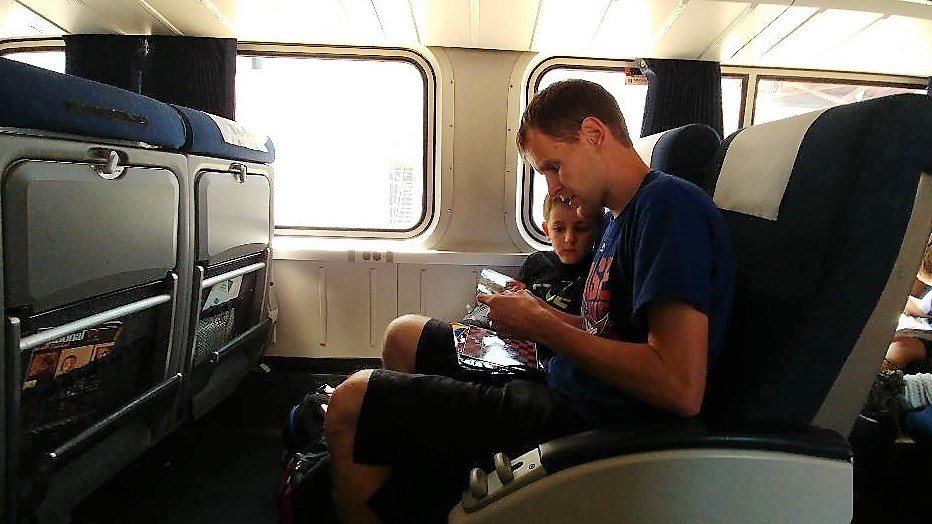

GREAT DEALS WITH GREAT DISCOUNT!
“The most beautiful in the world is, of course, the world itself.” – Wallace Stevens
so Why sit at home.....pack Your bags and get ready with Foxtrip.com!

Why FOXTRIP?
Nurtured from the seed of a single great idea - to empower the traveller. Founded in the year 2018 by ROHIT SAHOO, CHINMAY KATHALE and VEDANG NAIK, FOXTRIP came to life to empower the Indian traveller with instant bookings and comprehensive choices.
FOXTRIP's rise has been led by the vision and the spirit of each one of its employees, for whom no idea was too big and no problem too difficult. FOXTRIP has stayed ahead of the curve by continually evolving its technology to meet the ever-changing demands of the rapidly developing Indian railway travel market, steadily establishing itself as India's leading rail online travel company.
© FOXTRIP (INDIA) PVT. LTD.
ESTD. 2018. CRAFTED IN INDIA